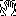

IQmol operates in one of four modes that change the behavior of the mouse
actions. Modes are selected by clicking on the appropriate tool from the
Tool Bar. In addition, some modes can be activated whilst in the manipulate
mode using hot keys.
Activating this mode changes the cursor to . This is the default mode for the viewer and allows the molecule to be rotated and zoomed.
The manipulate mode implements the following mouse functions:
Activating this mode changes the cursor to . This mode can also be activated using the alt modifier when in manipulate mode.
Build mode is used to add either atoms or fragments to the molecule depending on if the build atom or build fragment Toolbar button is selected. Fragments can either be functional groups, EFPs or entire molecules. For adding atoms and functional groups, the build mode implements the following mouse functions:
Activating this mode changes the cursor to . This mode can also be activated using the shift key when in manipulate mode.
The select mode implements the following mouse functions:
If the following items are selected, appropriate geometric infomation is displayed in the bottom left of the viewer window:
The selected geometric parameter can be constrained using the menu option
Build→Fix Constraint. This will fix the value of this parameter when
the button is pressed.
Activating this mode changes the cursor to . This mode manipulates only the selected atoms, and can only be activated using the ctrl modifier (⌘ key on Mac). This mode is useful for moving and orienting separate fragments in the molecule.
The manipulate selection mode implements the following mouse functions: